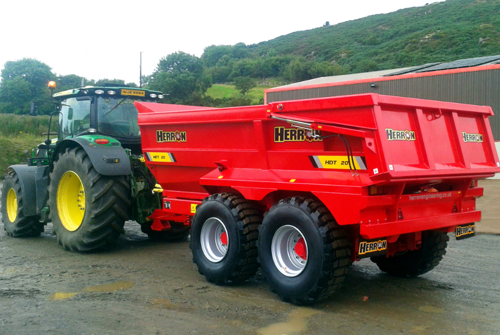

ABOUT HERRON ENGINEERING LTD
Built in County Down.
Made to work.
Established by William Herron in 1989 and incorporated in 2005, Herron Engineering manufactures agricultural and industrial trailers, slurry tankers and spreading equipment in County Down. Products are designed, plasma cut, folded, welded and fitted in-house, with bespoke configurations available. Equipment is shot-blasted and finished with two-pack polyurethane paint.

A useful conversation.
A practical approach.
Established by William Herron in 1989 and incorporated in 2005, Herron Engineering manufactures agricultural and industrial trailers, slurry tankers and spreading equipment in County Down. Products are designed, plasma cut, folded, welded and fitted in-house, with bespoke configurations available. Equipment is shot-blasted and finished with two-pack polyurethane paint.
Explore the offering ↗